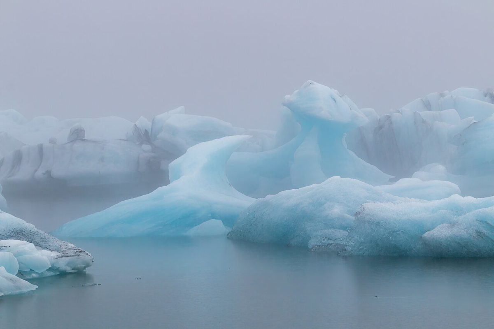
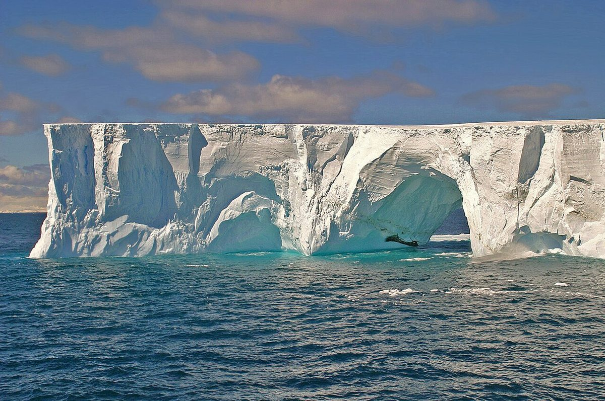
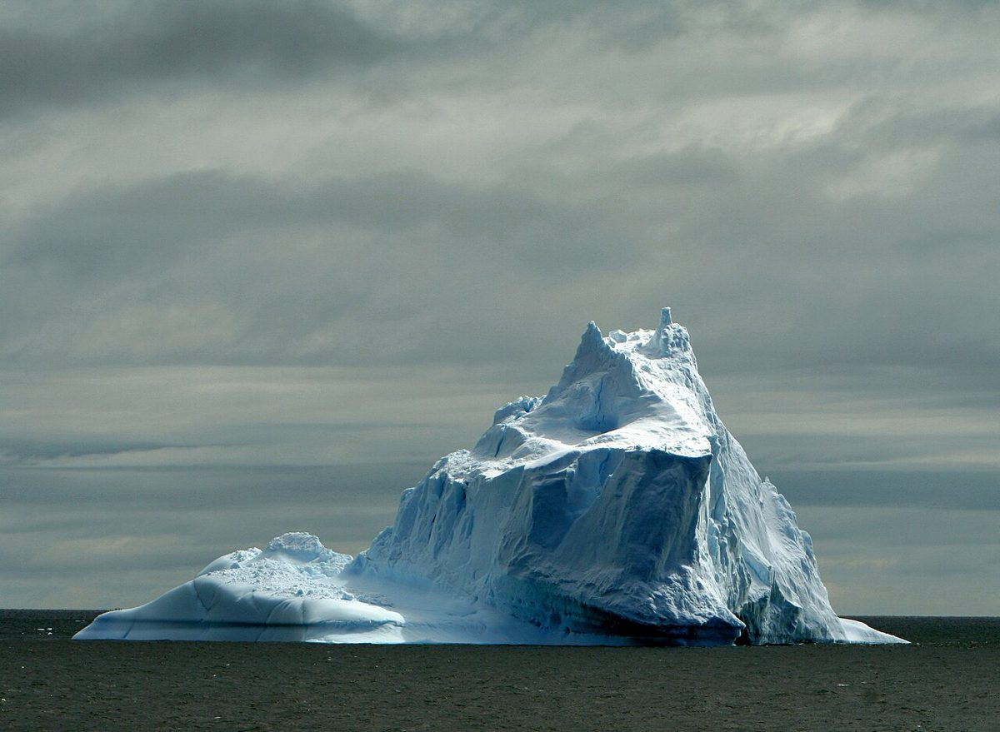

喫水線 0m
制作側の連想
「白くま」から、氷山の喫水線へ
店名の由来は分かりません。制作側は「Shirokuma」を「白くま(白熊)」と読み、白熊から氷、氷山へと連想を広げました。氷山は海面から出ているのがごく一部で、大半は水面の下にあるといわれます。この試作ページは、そのイメージで作っています。水面から上は「確認できたこと」、水面の下は「まだ見えていないこと」です。制作側の連想で、お店の理念・由来とは無関係です。
9分の1と9分の8
見えているのは、これだけ。
見えている
- 所在地
- 電話はなし
水面の下(未確認のため準備中)
- 営業時間
- 定休日
- メニュー
- 価格
- ご予約
- 駐車場
帯の幅は氷山のイメージを表すための飾りで、情報の量を示すものではありません。
氷のかけら(イメージ)
三つの氷。
写真は神栖市の風景やお店のものではありません。国外のフリー素材(南極・アイスランド)です。



ご案内
お店のこと(確認できたものだけ)
| 所在地 | 〒314-0114 茨城県神栖市日川198-3 |
|---|---|
| 電話 | なし |
| 営業時間 | 準備中 |
| 定休日 | 準備中 |
| ご予約 | 準備中 |
| 駐車場 | 準備中 |
| SNS | Instagram @shirokumafactory |